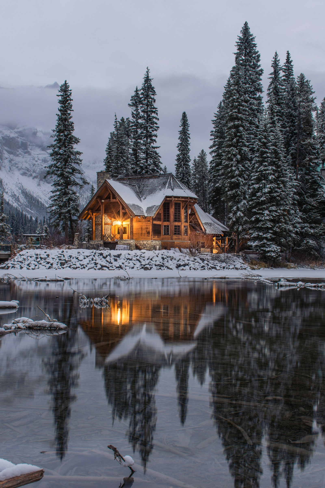
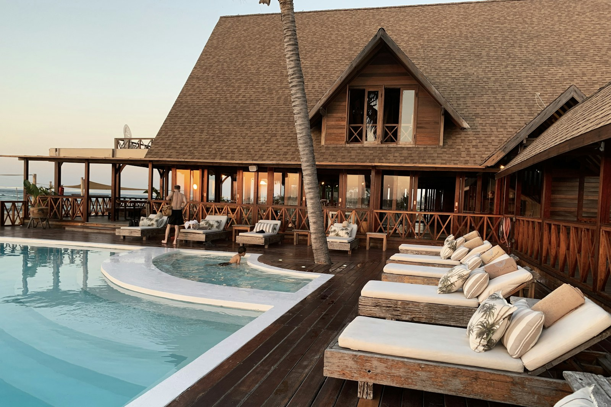

Konaklama
Yayla tatili için sade, sıcak ve dinlenmeye odaklı bir konaklama deneyimi.
 Ara
Ara

Giresun - Kulakkaya Yaylası
Ahşap ve taş mimarisiyle Ziver Başar Konağı, Kulakkaya Yaylası'nda sakin, özenli ve doğaya yakın bir konaklama deneyimi sunar.
Ziver Başar Konağı
Konağın karakteri cephede başlar: sıcak ahşap yüzeyler, taş dokular ve akşamları belirginleşen ışıklı tabela. Site dili de bu hissi korur; sade, güven veren ve rezervasyona kolay ulaşan bir yapı üzerine kurulur.
Yayla tatili için sade, sıcak ve dinlenmeye odaklı bir konaklama deneyimi.
Serin hava, sakin çevre ve Giresun'un yayla rotalarına yakın bir konum.
Telefon, WhatsApp ve e-posta bağlantılarıyla hızlı bilgi ve rezervasyon.
Yayla Deneyimi
Kulakkaya'nın doğasına yakın konumu, taş ve ahşap mimariyle birleşerek kısa tatiller için sakin ama karakterli bir durak oluşturur.
Konağı yakından tanıyın


Hakkımızda

Odalar
İletişim